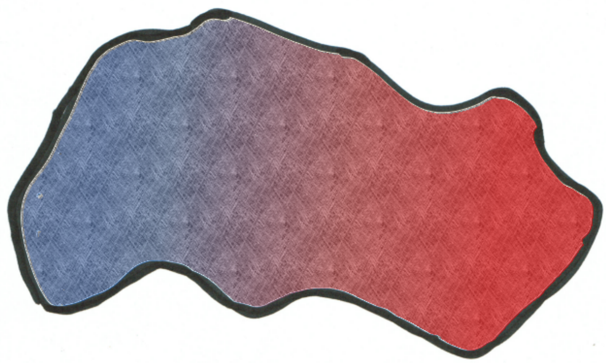

The Impact of Geometry on Quantum Friction
• C. H. Egerland, D. Reiche, F. Intravaia & K. Busch
Intravaia et al., Phys. Rev. A 89, 050101(R) (2014)
Klatt et al., Phys. Rev. A 95, 052510 (2017) Intravaia et al., Phys. Rev. A 94, 042114 (2016)
\[\Tiny \mathbf{F} = -2\int_{0}^{\infty}d\omega\int\frac{d^2 \mathbf{k}} {(2\pi)^2}\mathbf{k}~\text{Tr} \left[\underline{S}_R(\mathbf{k} \cdot \mathbf{v} - \omega; v) \cdot \underline{G}_{I}^s(\mathbf{k}, z_{a} ,\omega)\right] \]
\[ \Tiny \mathbf{F} = -2\int_0^{\infty}d\omega\int\frac{d^2 \mathbf{k}} {(2\pi)^2}\mathbf{k}~\text{Tr} \left[\underline{S}_R(\mathbf{k} \cdot \mathbf{v} - \omega; v) \cdot \underline{G}_I^s(\mathbf{k}, z_a ,\omega)\right] \]
\(\Tiny \underline{S}(\mathbf{k} \cdot \mathbf{v} - \omega; v)~\rightarrow~\text{dipole properties}\)
\(\Tiny \underline{G}(\mathbf{k}, z_a, \omega)~\rightarrow~\text{ material properties & geometry}\)
\(F \approx - 10^{-20}~\text{N}\)
The Impact of Geometry on Quantum Friction
Geometry enters via \(\small \underline{G}(\mathbf{k}, z_a, \omega)\)
\[\tiny \underline{G}(\mathbf{k}, z_a, \omega)^{\mathrm{(*)}} = \frac{k}{2\epsilon_{0}} \left[\mathcal{P}\left(k,z_{a},\omega\right)\left(\frac{k_{x}^{2}}{k^{2}}\mathbf{x}\mathbf{x}+\frac{k_{y}^{2}}{k^{2}}\mathbf{yy}\right)+\mathcal{P}\left(k,z_{a},\omega\right)\mathbf{zz}\right]\] \[
\tiny
\begin{align*}
\mathcal{P}(k, z_a, \omega)&= r \exp [ - 2 k z_a ] \\
r &= r_{\mathrm{TM}}(k, \omega)
\end{align*}
\]
\(\mathrm{(*)}\): near field (\(c \to \infty\)), symmetric part
\[\small \underline{G}(\mathbf{k}, z_a, \omega)^{\mathrm{(*)}} = \frac{k}{2\epsilon_{0}} \mathcal{F}(k, d, \omega) \left[R_{-}\left(k,z_{a},\omega\right)\left(\frac{k_{x}^{2}}{k^{2}}\mathbf{x}\mathbf{x}+\frac{k_{y}^{2}}{k^{2}}\mathbf{yy}\right)+R_{+}\left(k,z_{a},\omega\right)\mathbf{zz}\right]\] \[\small R_{\pm}\left(k,z_{a},\omega\right)=\left[\mathcal{P}\left(k,z_{a},\omega\right)+\mathcal{P}\left(k,d-z_{a},\omega\right)\pm\mathcal{R}(k,d,\omega)\right]\] \[
\small
\begin{align*}
\mathcal{P}(k, x, \omega)&= r \exp [ - 2 k x ] && \text{single plate contribution} \\
\mathcal{R}(k, d, \omega)&= 2 r ^ { 2 } \exp [ - 2 k d ] && \text{round-way trip} \\
\mathcal{F}(k, d, \omega)&= \sum_{n=0}^{\infty}r^{2n}\exp[- 2 n k d ] && \text{Fabry-Perot reflection}
\end{align*}
\]
\(\mathrm{(*)}\): near field (\(c \to \infty\)), symmetric part
\(\small F^a_{\mathrm{plates}}\)
\(\small 17 F^a_{\mathrm{plate}}\)
Reiche et al. (to be submitted)
\(\small F^{np}_{\mathrm{plates}}\)
\(\small 2.002 F^{np}_{\mathrm{plate}}\)
Reiche et al. (to be submitted)
Why the difference? Why not 2?
Dipole model
\[\tiny \ddot{\hat{\mathbf{d}}}(t) + \int d t^{\prime} \mu\left(t-t^{\prime}\right) \dot{\hat{\mathbf{d}}}\left(t^{\prime}\right)+\omega_{a}^{2} \hat{\mathbf{d}}(t) =\underline{\alpha}_{0} \omega_{a}^{2} \hat{\mathbf{E}}\left(\mathbf{r}_{a}(t), t\right)+\hat{\mathbf{F}}(t)\] \[
\tiny
\begin{align*}
\hat{\mathbf{d}}(t)&~\widehat{=} \text{ dipole operator} \\
\mu(t)&~\widehat{=} \text{ damping kernel} \\
\omega_{a}&~\widehat{=} \text{ resonance frequency} \\
\hat{\mathbf{E}}(\mathbf{r}_{a}(t), t)&~\widehat{=} \text{ electric field operator} \\
\hat{\mathbf{F}}(t)&~\widehat{=} \text{ Langevin noise} \\
\end{align*}
\]
Solve the equation!
\[ \tiny \underline{\alpha}(\omega, v)=\frac{\omega_{a}^{2}}{\omega_{a}^{2}-\Delta(\omega, v)-\omega^{2}-\mathrm{i} \omega[\mu(\omega)+\overline{\gamma}(\omega, v)]} \underline{\alpha}_{0} \] \[
\tiny
\begin{align*}
\Delta(\omega,v)&~\widehat{=} \text{ resonance shift} \\
\mu(\omega)&~\widehat{=} \text{ intrinsic damping} \\
\overline{\gamma}(\omega,v)&~\widehat{=} \text{ radiation-induced damping} \\
\end{align*}
\]
Intrinsic damping
\[\mu(\omega) \propto \rho_{\mathrm{int}}\]
\[\Tiny r_{I}(\omega) \stackrel{\omega \to 0}{\approx} 2 \omega \epsilon_{0} \rho_{\mathrm{rad}}\] \[\downarrow\] \[\Tiny \overline{\gamma}(\omega,v) \propto \rho_{\mathrm{rad}}\]
\(\small \rho_{\mathrm{int}}=0\) and \(\small \rho_{\mathrm{rad}}\)

\(\small \rho_{\mathrm{int}}\ne0\) and \(\small \rho_{\mathrm{rad}}\)
\(\small F^{a}_{fric} \propto \rho_{\mathrm{rad}}^2\)
\(\small F^{np}_{fric} \propto \rho_{\mathrm{int}} \rho_{\mathrm{rad}}\)
Why the difference? Why not 2?
- Nanoparticle depends linearly on geometry
- deviation due to Fabry-Perot reflections
- Atom depends quadratically on geometry
- deviation due to interference effect and no rotation
Thank you!
(AG Theoretische Optik & Photonik @ HU Berlin)